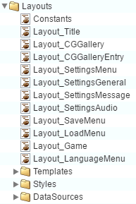

游戏内 UI API 参考
了解详细信息，并且不要犹豫在 Visual Novel Maker 论坛中寻求帮助。
布局游戏内 UI 是使用布局定义的。 你可以在 Script Editor > Layouts 文件夹中找到游戏的所有默认布局。布局包含一组控件，如图像、按钮、文本等，并根据布局类型管理每个控件的位置和大小。 例如：网格布局在其行和列的网格中显示其项目：
（网格布局示例）
布局还可以包含其他布局，以构建更复杂的布局。

控件
控件涵盖了一部分 UI 逻辑，例如显示图像、按钮、文本等。 技术上，控件和布局之间没有太大区别。 但控件通常不能包含其他控件。
（控件示例）
案例示例
请查看我们的游戏内 UI 示例，以了解更多关于如何修改或制作自己的用户界面（游戏内 UI）的信息！
示例 1：自定义标题屏幕
在此示例中，我们将使用 Visual Novel Maker 的游戏内 UI 系统来制作我们自己的标题屏幕！
示例 2：样式
在此示例中，我们将教授如何使用样式来避免冗余代码，并使修改布局更加容易。
示例 3：动画
示例 4：模板
我们已经学会了样式如何帮助我们避免布局中的冗余数据。 但由于样式是有限的，我们将教你如何制作和使用模板来克服它们！
示例 5：操作
示例 6：数据绑定
现在你已经掌握了基础知识，我们将教你这项复杂的功能。 数据绑定允许我们显示或更改后台数据（例如，游戏内设置）。
示例 7：公式
在此示例中，我们将教你另一项复杂的功能，称为公式。 它们是定义在控件下的函数，并在特定条件下执行。
示例 8：使用组件
在此示例中，我们将教你另一项复杂的功能，称为组件。 这允许你为控件指定一个特定条件。
有用提示
不要使布局比实际需要的更复杂。 仔细想想，也许几个简单的图像比构建一个庞大复杂的布局结构能更有效地解决问题。 布局越复杂，性能消耗越大。 特别是如果你计划在性能较弱的移动设备上发布游戏。
HTML
图像地图和热点教程
图像地图和热点教程